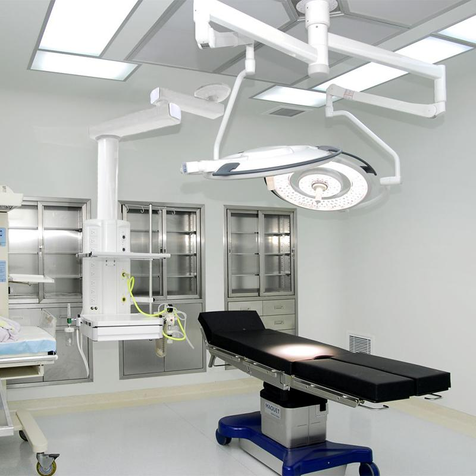

ACROMED HEALTHCARE Technologies Limited
Elevating Healthcare Standards Across East Africa
ACROMED Healthcare Technologies Limited is a Ugandan-registered company (Certificate of Incorporation No. 80034002521141) specialising in the supply, installation, and maintenance of medical equipment and consumables. We provide end-to-end solutions from procurement through installation to after-sales support, serving hospitals, clinics, diagnostic centres, and maternity facilities across Uganda and East Africa.
Founded in 2021, ACROMED was established to address a critical gap in Uganda's healthcare technology market — the lack of reliable, affordable medical equipment backed by genuine after-sales support. Before starting ACROMED, our founding team spent years working in clinical engineering and medical equipment procurement across East Africa, witnessing firsthand how poor-quality equipment and absent service contracts disrupted patient care. This experience shaped our core philosophy: every piece of equipment we supply must be matched by professional installation, thorough staff training, and responsive maintenance support.
With over 4 years of experience, we have partnered with reputable international manufacturers including Mindray, Contec, Shenzhen Medical, Locmedt, Zeiss, and DLAB to deliver reliable, high-quality medical devices. Each brand is selected based on its track record in East African healthcare settings, availability of spare parts, and the manufacturer's commitment to training and technical documentation. Our team of experienced biomedical engineers and healthcare technology professionals ensures that every installation meets the highest standards of quality and safety.

To elevate healthcare standards by providing high-quality medical equipment, professional installation, and reliable after-sales support to healthcare facilities across East Africa.
To be the preferred healthcare technology partner in East Africa, known for quality, integrity, and exceptional customer service.
Every product we supply is backed by training, warranty, and ongoing technical support to ensure your team can use it with confidence.
We conduct business with honesty and transparency.
We only supply equipment that meets international standards.
Your needs drive everything we do.
We embrace new technologies to serve you better.
ACROMED Healthcare Technologies Limited was founded with the mission of bridging the gap between international medical device manufacturers and healthcare facilities in East Africa. Over the years, we have grown from a small equipment supply company into a comprehensive healthcare technology partner serving hospitals and clinics across multiple countries.
Our team includes certified biomedical engineers, medical equipment technicians, and healthcare technology consultants who bring years of practical experience in clinical engineering, equipment procurement, and project management. Our senior biomedical engineer has over a decade of experience in medical device installation and calibration across East Africa, having previously worked with major hospital projects in Kampala, Nairobi, and Dar es Salaam. Our equipment procurement specialist manages relationships with manufacturers across China, Europe, and the United States, ensuring that every product we import meets Ugandan regulatory requirements and international quality standards. Our service and maintenance lead coordinates our team of field technicians who carry out installations, preventive maintenance visits, and emergency repairs across Uganda and neighbouring countries.
We continuously invest in training and professional development to ensure our team stays current with the latest medical technologies and service best practices. Each year, our engineers participate in manufacturer-led training programmes covering new product lines, diagnostic software updates, and advanced troubleshooting techniques. This ongoing investment in expertise allows us to advise clients confidently on equipment selection, plan efficient installations, and deliver reliable after-sales support that keeps healthcare facilities operating at their best.
Our certifications underscore our commitment to compliance and professional standards. Our Certificate of Incorporation confirms ACROMED Healthcare Technologies Limited as a legally registered entity in Uganda. Our EGP Uganda Certification registers us as an approved supplier on the Government e-Procurement platform, meaning government and public-sector healthcare facilities can procure from us through the official procurement system. Our current Business License authorises us to trade in medical equipment and supplies, renewable annually with the Uganda Registration Services Bureau. We maintain these certifications in good standing and provide copies to clients upon request for tender submissions and due diligence processes.
Registered and accredited by the relevant regulatory authorities in Uganda